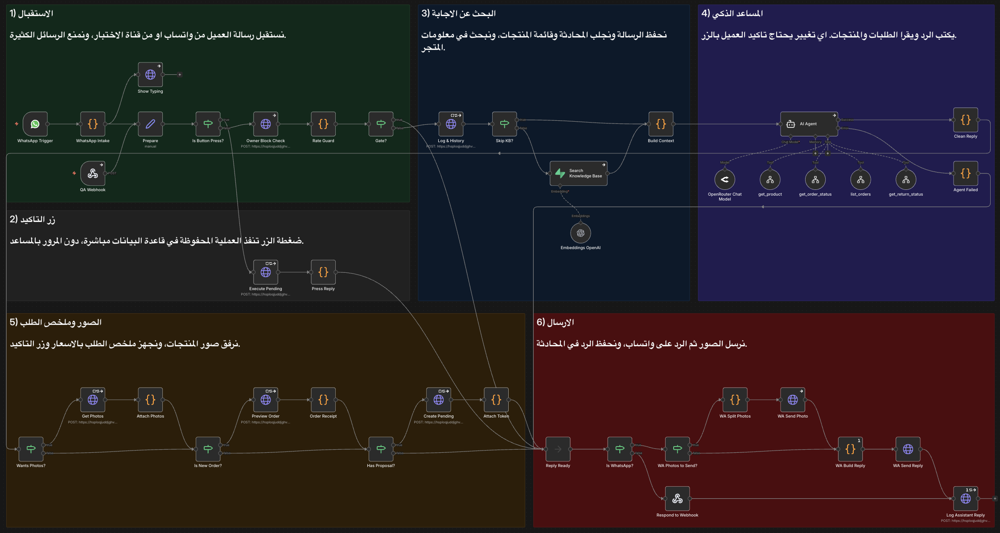

متجر ملابس رجالية على واتسابMen's clothing shop on WhatsApp
Galy Fashion
متجر ملابس رجالية يعمل بالكامل داخل واتساب: العميل يسأل ويرى الصور ويطلب ويتابع طلبه من المحادثة نفسها، دون موقع أو تطبيق.A men's clothing shop that runs entirely inside WhatsApp: the customer asks, sees photos, orders and tracks the order in the same chat, with no website or app.
ساعة العرض التجريبي: الدقيقة تساوي يوما، حتى ترى دورة الطلب كاملة في جلسة واحدة. يمكن إلغاء الطلب في أول دقيقتين تقريبا، ويصبح «تم التوصيل» بعد خمس دقائق، بينما تقول رسائل التأكيد «خلال 5 أيام» كما في متجر حقيقي.The demo clock: one minute stands for one day, so you can watch an order's whole life in one sitting. It can be cancelled for roughly the first two minutes and becomes “delivered” after five, while the confirmation messages still say “within 5 days”, as a real shop's would.
تجريبي فقط. Galy Fashion من أعمال عمر الجالي، ولا يباع فيه شيء ولا يشحن، ولا يحصل أي مبلغ. يمكنك استخدام اسم وعنوان غير حقيقيين.Demo only. Galy Fashion by Omar Galy sells and ships nothing, and takes no payment. You can use a made-up name and address.
نسخة من محادثة سابقة مع المساعد.A copy of an earlier chat with the assistant.
- القناةChannel
- واتسابWhatsApp
- اللغاتLanguages
- العامية المصرية، الإنجليزيةEgyptian Arabic, English
- الأدواتBuilt with
- WhatsApp Cloud API, n8n, Supabase
ما يستطيعه العميلWhat a customer can do
- يسأل عن المنتجات والمقاسات والألوان والأسعار، وتصله صور المنتجAsk about products, sizes, colours and prices, and get the product's photos
- يطلب قطعة أو أكثر، ويراجع ملخص الطلب بالأسعار قبل تأكيدهOrder one item or several, and review a priced summary before confirming
- يعدل الطلب أو يلغيه قبل شحنه، ويتابع حالتهChange or cancel the order before it ships, and track its status
- يطلب استرجاع قطعة أو يقدم شكوىRequest a return or file a complaint
- يطلب التحدث إلى شخص، فيصله رقم الفريقAsk for a person and get the team's number
كيف بنيHow it's built
- زر التأكيد: المساعد يقترح العملية فقط. عند ضغط الزر تنفذ العملية المحفوظة في قاعدة البيانات مباشرة، دون المرور بنموذج الذكاء الاصطناعي.The confirm button: the assistant only proposes an action. Pressing the button runs the action stored in the database directly, without passing through the AI model.
- أدوات المساعد للقراءة فقط: يقرأ المنتجات والطلبات والمرتجعات، ولا يستطيع تغيير شيء بنفسه.The assistant's tools are read-only: it reads products, orders and returns, and can't change anything by itself.
- ملخص الطلب وأسعاره يجهزها النظام من قاعدة البيانات، لا النموذج.The order summary and its prices are prepared by the system from the database, not by the model.
- قبل الرد يبحث النظام في ملف معلومات المتجر عما يخص السؤال.Before replying, the system searches the shop's information file for what the question needs.
- حد للرسائل المتتابعة يمنع إغراق المساعد.A limit on rapid messages keeps the assistant from being flooded.
مسار العملThe workflow
المسار الذي يشغل المساعد على n8n، من وصول الرسالة إلى الرد.The n8n workflow that runs the assistant, from the incoming message to the reply.
